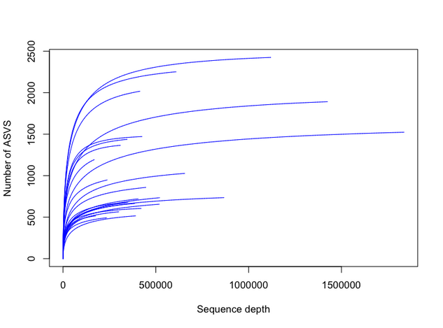
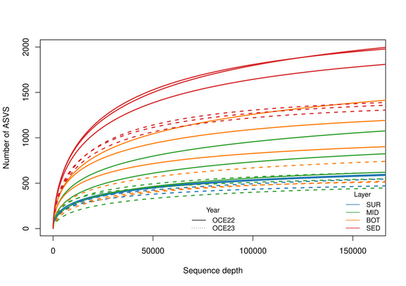
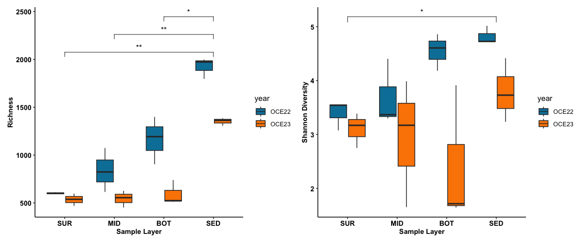

Alpha Diversity in R: Getting Started
Date: July 01, 2025
1. What is alpha diversity?
Alpha diversity refers to the diversity within a single sample. It’s commonly used to assess richness (number of species or ASVs/OTUs; both of which are proxies for species) and evenness (distribution of species) in ecological communities.
2. What are Species Accumulation and Rarefaction Curves?
- Species Accumulation Curve: A plot showing the cumulative number of species detected as more samples are added, useful to assess sampling effort and completeness.
- Rarefaction Curve: A standardized way to compare species richness across samples by adjusting for differences in sequencing depth (subsampling).
3. Alpha diversity indices
A measure of species diversity within a single sample or site. Common indices include:
- Richness (number of species/OTUs/ASVs)
- Shannon Index (accounts for abundance and evenness)
- Simpson Index (gives more weight to common species)
Should you normalize data for alpha diversity analysis?
No normalization is typically needed for presence/absence-based
richness (e.g., specnumber()), as it just counts the number of
taxa per sample.
Yes, normalization is important when:
- Comparing diversity across samples with very different sequencing depths.
- Using abundance-sensitive indices like Richness, Shannon, Simpson, or evenness, where deeper sequencing inflates diversity estimates.
In general, Richness (the number of different species) is more sensitive to sequencing depth than diversity indices like Shannon or Simpson. This is because richness is a simple count, and sequencing depth directly impacts how many rare species are detected, potentially inflating richness estimates.
Shannon and Simpson indices, while also affected, are less sensitive because they incorporate the relative abundance of species. Overall, normalization is still recommended to ensure fair comparisons across samples with different sequencing depths.
And how to normalize:- Rarefaction (subsampling): Simplest and most common approach.
- CSS, TSS, or DESeq2 normalization: More advanced methods to handle compositional data. Useful if you want to retain all samples without discarding reads (as rarefaction does). Best for differential abundance and beta diversity.
Below, I normalized the data using rarefaction before calculating Richness (Normalized Richness) and Shannon Diversity to ensure comparability across samples by minimizing biases from differing sequencing depths.
4. How to perform alpha analysis
To perform alpha analysis, we generally follow these steps using the vegan package:
-
Prepare your data
- Your input should be a community matrix (samples as rows, ASV as columns).
- Consider filtering rare taxa or low-read samples beforehand.
- Normalize sequencing depth if required before calculating alpha diversity.
# Load Required Packages
install.packages("vegan") # if not already installed
library(vegan)
#input dataset and turn abundance data frame into a matrix
com = read.csv("ASV_table.csv",row.names = 1, header= TRUE)
com <- as.matrix(t(com))
# Show first 5 rows and first 10 columns
com[1:5, 1:10]
> com[1:5, 1:10]
ASV1 ASV10 ASV100 ASV1000 ASV1001 ASV1002 ASV1003 ASV1004 ASV1005 ASV1006
OCE22_BL1_01 0 143055 7 0 1 0 2 0 0 3
OCE22_BL1_02 38639 18080 1481 518 103 0 7 0 4 251
OCE22_BL1_03 10686 23020 19225 0 88 0 2 0 39 44
OCE22_BL2_01 3195 346 0 0 0 0 69 0 0 7
OCE22_BL2_02 73508 18791 44 0 16 1 2 0 0 50
-
Species Accumulation Curve
- Species Accumulation Curve shows how the number of observed ASVs/OTUs increases with additional sampling effort (e.g., number of samples).
- A plateau in the curve suggests that most species have been detected, while a rising curve indicates that more sampling may reveal additional species.
# Set seed for reproducibility
set.seed(123)
# Generate species accumulation curve
specaccum_result <- specaccum(com, method = "random")
# Plot the accumulation curve
plot(specaccum_result, xlab = "Number of Samples", ylab = "Number of ASVS")

-
Rarefaction Curve
- A rarefaction curve plots the expected number of species against sequencing depth for each sample, allowing comparison of species richness at a standardized read count.
- A steeper initial slope indicates high richness; if curves reach plateau, it suggests sequencing captured most of the diversity, whereas non-plateaued curves imply under-sampling.
# Set seed for reproducibility
set.seed(123)
rarecurve(com, step = 100, col = "blue", label = FALSE,
xlab = "Sequence depth",
ylab = "Number of ASVS")

Plot the rarefaction curve combined with metadata
# Load sample metadata (assumed to match row order of 'com')
metadata <- read.csv("meta_env.csv", row.names = 1, header = TRUE)
head(metadata)
station year year_layer layer
OCE22_BL1_01 BL01 OCE22 OCE22_water SUR
OCE22_BL1_02 BL01 OCE22 OCE22_water MID
OCE22_BL1_03 BL01 OCE22 OCE22_water BOT
OCE22_BL2_01 BL02 OCE22 OCE22_water SUR
OCE22_BL2_02 BL02 OCE22 OCE22_water MID
OCE22_BL2_03 BL02 OCE22 OCE22_water BOT
# Define line types for each sampling year
lty_levels <- c("OCE22" = "solid", "OCE23" = "dotted")
# Define colors for each layer type
layer_colors <- c("SUR" = "#1f77b4", "MID" = "#2ca02c", "BOT" = "#ff7f0e", "SED" = "#d62728")
# Map line types based on the year variable
lty_map <- c("OCE22" = "solid", "OCE23" = "dashed")
# Plot rarefaction curves
rarecurve(
com, step = 20, # sampling increment
label = FALSE, # do not label sample names
col = layer_colors[as.character(metadata$layer)], # color by layer
lty = lty_map[as.character(metadata$year)], # line type by year
lwd = 2, # line width
cex = 0.6, # point size
ylim = c(0, 2000), # y-axis limit for species richness
xlim = c(0, 160000), # x-axis limit for sequencing depth
xlab = "Sequence depth",
ylab = "Number of ASVS")
legend("bottomright",
legend = c("SUR", "MID", "BOT", "SED"),
col = layer_colors, lty = 1,
title = "Layer", cex = 0.8,
bty = "n", xjust = 0.5)
legend( "bottom",
legend = c("OCE22", "OCE23"),
col = "black", lty = lty_levels,
title = "Year", cex = 0.8, bty = "n")

- Normalization and Diversity Calculation
# Calculate total number of sequences (reads) per sample
total_read <- rowSums(com)
# Calculate observed species richness per sample (number of unique species)
observed_richness <- specnumber(com)
# Find the minimum sequencing depth across all samples
min_seq <- min(total_read)
min_seq # Show the minimum sequencing depth
# Normalize (rarefy) the community matrix to the minimum sequencing depth
# This ensures fair comparison of richness across samples
m_com <- rrarefy(com, min_seq)
# Calculate species richness again, now on the rarefied data
richness <- rarefy((com, min_seq) # Expected richness (mean) for quick estimation only
# or
richness <- specnumber(m_com) # Observed richness after rarefied (Noralized richness)
# Calculate the Shannon diversity index (accounts for both richness and evenness)
shannon <- diversity(m_com, index = "shannon")
-
Statistical Testing
- The Wilcoxon rank-sum test is used because alpha diversity metrics often do not follow a normal distribution.
- The Bonferroni correction adjusts p-values for multiple comparisons, reducing the chance of false positives.
- Result interpretation: These tests tell you whether richness or Shannon diversity significantly differs between any pairs of layers (e.g., SUR vs. BOT). Look for adjusted p-values < 0.05 (or < 0.1) for significance.
# Load metadata with sample information (e.g., layer, year, etc.)
metadata <- read.csv("meta_env.csv", row.names = 1, header = TRUE)
# Ensure 'layer' is treated as an ordered factor with a defined level order
metadata$layer <- factor(metadata$layer, levels = c("SUR", "MID", "BOT", "SED"))
# Add calculated diversity metrics (from previous analysis) into the metadata
metadata$shannon <- shannon # Shannon diversity index
metadata$richness <- richness # Species richness (from rarefied data)
# Perform pairwise Wilcoxon tests (non-parametric) for richness between layers
pairwise.wilcox.test(metadata$richness, metadata$layer,
p.adjust.method = "bonferroni")
Pairwise comparisons using Wilcoxon rank sum exact test
data: metadata$richness and metadata$layer
SUR MID BOT
MID 1.000 - -
BOT 1.000 1.000 -
SED 0.013 0.013 0.091
P value adjustment method: bonferroni
# Perform pairwise Wilcoxon tests for Shannon diversity between layers
pairwise.wilcox.test(metadata$shannon, metadata$layer,
p.adjust.method = "bonferroni")
Pairwise comparisons using Wilcoxon rank sum exact test
data: metadata$shannon and metadata$layer
SUR MID BOT
MID 1.000 - -
BOT 1.000 1.000 -
SED 0.091 0.390 1.000
P value adjustment method: bonferroni
- Plot alpha indices using ggplot2
# Load required library for plotting
library(ggplot2)
# Define custom fill colors for different years
sample_color = c("#0081a7", "#fb8500")
# Normalized Richness across layers
# Create a boxplot showing normalized species richness per sample layer,
# grouped and filled by sampling year
p1 <- ggplot(metadata, aes(x = layer, y = richness, fill = year)) +
geom_boxplot() + # Draw boxplots
scale_fill_manual(values = sample_color) + # Apply custom year colors
labs(x = "Sample Layer", y = "Richness") + # Axis labels
theme_classic() + # Clean theme
theme(
axis.text.y = element_text(colour = "black", size = 10, face = "bold"),
axis.text.x = element_text(colour = "black", size = 10, face = "bold"),
axis.title.x = element_text(face = "bold", size = 10, colour = "black"),
axis.title.y = element_text(face = "bold", size = 10, colour = "black")
) +
stat_compare_means(
method = "wilcox.test", # Non-parametric pairwise test
comparisons = list(
c("SUR", "BOT"),
c("SUR", "SED"),
c("MID", "SED"),
c("BOT", "SED")
), # Specific group comparisons
label = "p.signif", # Show significance stars
hide.ns = TRUE # Hide non-significant labels
)
p1
# Shannon Diversity across layers
# Create a similar boxplot showing Shannon diversity per sample layer,
# again grouped by sampling year
p2 <- ggplot(metadata, aes(x = layer, y = shannon, fill = year)) +
geom_boxplot() +
scale_fill_manual(values = sample_color) +
labs(x = "Sample Layer", y = "Shannon Diversity") +
theme_classic() +
theme(
axis.text.y = element_text(colour = "black", size = 10, face = "bold"),
axis.text.x = element_text(colour = "black", size = 10, face = "bold"),
axis.title.x = element_text(face = "bold", size = 10, colour = "black"),
axis.title.y = element_text(face = "bold", size = 10, colour = "black")
) +
stat_compare_means(
method = "wilcox.test",
comparisons = list(c("SUR", "SED")), # Only compare SUR and SED layers based statictis tests
label = "p.signif",
hide.ns = TRUE
)
p2
library(patchwork)
p1 + p2

After analyzing alpha diversity, the next step is to assess beta diversity to understand differences in species composition between samples, typically using ordination methods like NMDS or PCoA.